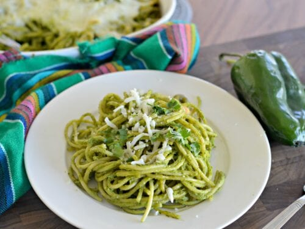

Espagueti verde

La preparación de espagueti verde es una deliciosa variante de la clásica pasta italiana que se distingue por su irresistible salsa verde a base de ingredientes frescos y sabrosos.
Esta receta combina la tradicional textura suave de los espaguetis con una salsa verde vibrante y llena de sabor, que puede incluir ingredientes como espinacas, cilantro, aguacate, chiles y ajo.
El resultado es un plato lleno de color y sabor, perfecto para aquellos que buscan una alternativa única a las salsas de pasta más convencionales.
En esta guía, te mostraremos cómo preparar unos espaguetis verdes deliciosos y te daremos algunos consejos para lograr el mejor resultado posible.
¡Prepárate para una experiencia culinaria llena de frescura y sabor con nuestra receta de espagueti verde!
Ingredientes
- 3 chiles poblanos rostizados y sin semillas
- 3 tomatillos
- 1/2 ramo de cilantro
- 1 taza de espinacas
- 3 onzas de queso crema
- 1 lata de media crema
- 3 dientes de ajo
- 1/4 de cebolla
- 1/4 cucharadita de comino molido
- 1/4 taza de caldo de pollo o más si es necesario
- Sal al gusto
- Spaguetti cocinado según las instrucciones del empaque
Procedimiento
- Empieza por rostizar los chiles poblanos, poniéndolos es un comal o sartén a fuego alto y
dorarlos hasta que queden oscuros como si estuvieran casi quemados por todos los lados.
- Una vez rostizados hasta ese punto ponlos dentro de una bolsa ziploc y déjalos reposar sellados
por 10 minutos hasta que estén sudados. Bajo el chorro de agua fría quitales la piel y
luego las semillas, para este proceso puedes usar guantes si prefieres.
- Aparte en una sartén con una cucharada de aceite sofríe la cebolla, las espinacas, el tomatillo y el ajo.
- Colocalos en una licuadora de alta potencia y licualos junto a los poblanos, el caldo de pollo, el cilantro,
la crema, el queso, la sal y el comino.
- Hierve la salsa con una cucharadita de aceite por 5 minutos retirala del fuego y rectifica el sabor si
necesitas más sal o caldo de pollo agregado.
- Revuelve la salsa con los espagueti y ponlo en un refractario para microondas u horno agrega una capa de queso
para derretir y deja cocinar hasta que esté derretido.
- ¡DISFRUTA!
Información nutrimental
| Por porción 43522.5 kcal = 2120 kj |
| Carbohidratos |
Energía |
Grasas |
Fibra |
Proteína |
Grasa saturadas |
Sodio |
Azúcares |
| 57.6 g |
43522.5 kcal |
2008.4 g |
3.1 g |
9019.2 g |
677.2 g |
26538.5 g |
3.4 g |
¿Quieres nuevas recetas?, contáctanos